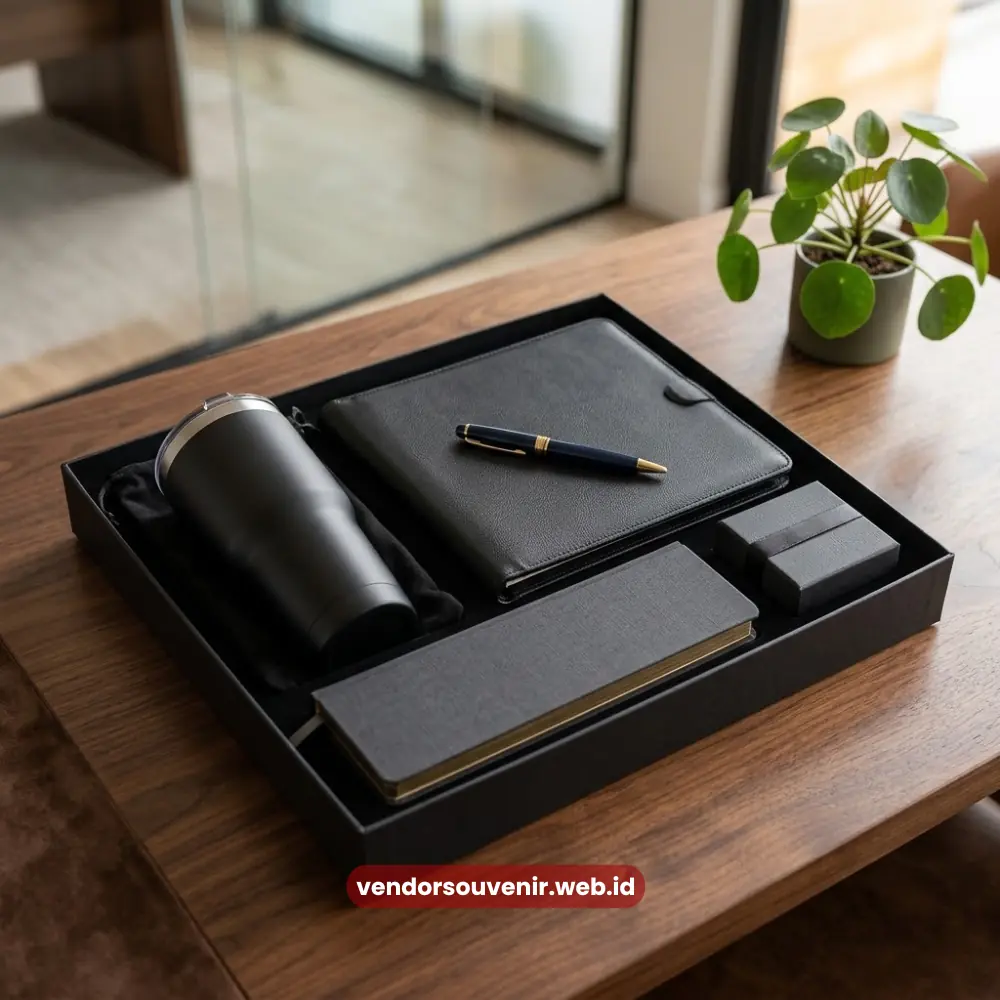

Daftar Isi
Isi paket onboarding karyawan umumnya terdiri dari tas kerja, tumbler, notebook, dan alat tulis.
Serta dilengkapi atribut identitas penting seperti lanyard atau kartu nama sementara bagi karyawan baru.
Komposisi ini dirancang agar karyawan baru langsung memiliki perlengkapan fungsional sejak hari pertama bekerja.
Vendor Souvenir menyediakan berbagai pilihan isi paket onboarding karyawan yang lengkap.
Dan tentunya dapat disesuaikan dengan anggaran dan identitas brand perusahaan Anda secara khusus.
- Isi paket onboarding karyawan terbagi menjadi item fungsional dan item identitas perusahaan.
- Tas kerja dan tumbler menjadi item yang paling sering dipilih perusahaan.
- Notebook serta alat tulis mendukung produktivitas karyawan sejak hari pertama.
- Komposisi paket dapat disesuaikan tanpa mengurangi kesan profesional.
- Setiap item dapat dicetak logo agar identitas brand terlihat konsisten.
Kenapa Komposisi Isi Paket Onboarding Perlu Diperhatikan?
Komposisi isi paket onboarding karyawan berpengaruh langsung pada kesan pertama yang diterima karyawan baru.
Paket yang disusun secara asal tanpa mempertimbangkan fungsi sehari-hari cenderung terasa kurang bernilai.
Hal ini tetap berlaku meskipun jumlah item yang diberikan di dalam kotak terlihat banyak.
Sebaliknya, paket dengan komposisi yang relevan dan rapi akan lebih diingat oleh karyawan.
Serta digunakan secara berkelanjutan oleh karyawan tersebut dalam aktivitas mereka sehari-hari.
Apa Perbedaan Isi Paket untuk Perusahaan Kecil dan Besar?
Perusahaan berskala kecil umumnya memilih komposisi paket yang jauh lebih ringkas.
Biasanya mereka hanya memberikan dua hingga tiga item utama saja.
Sementara perusahaan berskala besar cenderung menyediakan paket yang jauh lebih lengkap.
Hal ini sering kali menjadi bagian penting dari strategi employer branding perusahaan tersebut.
Perbedaan ini biasanya berkaitan erat dengan anggaran serta penekanan terhadap pengalaman onboarding.
Apa Saja Item Utama dalam Paket Onboarding Karyawan?
Item utama yang biasa dijumpai dalam paket onboarding karyawan mencakup tas kerja atau totebag.
Kemudian tumbler atau botol minum, notebook profesional, dan pulpen eksklusif.
Keempat item ini sering dipilih karena sifatnya yang sangat fungsional bagi penggunanya.
Sehingga dapat digunakan karyawan dalam menunjang setiap aktivitas kerja harian mereka.
Baik saat mereka bekerja di dalam maupun saat bertugas di luar lingkungan kantor.
Kenapa Tas Kerja dan Tumbler Paling Sering Dipilih?
Tas kerja dan tumbler dipilih karena frekuensi penggunaannya yang dinilai sangat tinggi.
Sehingga logo perusahaan yang tercetak pada kedua item ini akan menjadi lebih sering terlihat.
Baik oleh karyawan itu sendiri maupun oleh rekan dan lingkungan di sekitarnya.
Selain memiliki nilai fungsional yang tinggi, kedua item ini juga relatif mudah dikustomisasi.
Khususnya dengan berbagai macam teknik cetak logo modern yang tersedia saat ini di pasaran.

Custom Logo pada Isi Paket Onboarding
Bagaimana dengan Item Identitas Perusahaan?
Selain item fungsional, paket onboarding karyawan juga umumnya menyertakan atribut identitas penting.
Atribut ini dapat berbentuk seperti lanyard, kartu nama sementara, atau ID card holder untuk akses.
Item ini sangat membantu karyawan baru merasa menjadi bagian resmi dari perusahaan.
Perasaan bangga dan diakui ini akan muncul kuat sejak hari pertama mereka masuk kerja.
Sekaligus mempermudah proses administrasi internal dan pengelolaan keamanan di lingkungan kerja.
Apakah Perlu Menambahkan Merchandise Tambahan?
Merchandise tambahan seperti mouse pad, flashdisk, atau sticky note dapat menjadi pelengkap yang menarik.
Item kecil ini dapat menambah kesan detail dan perhatian lebih dari perusahaan terhadap karyawan baru.
Penambahan item merchandise semacam ini sifatnya pada dasarnya adalah opsional.
Dan biasanya disesuaikan dengan sisa ketersediaan anggaran dari perusahaan.
Khususnya anggaran yang masih tersedia setelah semua komponen item utama ditentukan.
Bagaimana Menyesuaikan Isi Paket dengan Anggaran Perusahaan?
Penyesuaian isi paket onboarding karyawan dengan anggaran dapat dilakukan dengan cara menentukan prioritas.
Yaitu dengan menentukan dua hingga tiga item prioritas utama terlebih dahulu.
Kemudian perusahaan baru menambahkan item pelengkap sesuai sisa anggaran yang masih tersedia di kas HR.
Pendekatan efisien ini akan membantu perusahaan tetap menghadirkan paket sambutan yang berkesan.
Tanpa harus mengorbankan kualitas pada item utama yang nantinya diberikan kepada karyawan.
Apa yang Sebaiknya Diprioritaskan jika Anggaran Terbatas?
Jika anggaran benar-benar terbatas, item dengan tingkat penggunaan harian tertinggi sebaiknya diprioritaskan.
Contohnya seperti memilih tumbler atau notebook dibandingkan item dekoratif yang jarang digunakan.
Pendekatan cermat ini memastikan setiap rupiah yang dikeluarkan oleh perusahaan memberikan nilai yang optimal.
Khususnya nilai fungsional bagi karyawan baru dalam menjalankan tugas harian mereka.
Kesimpulan
Isi paket onboarding karyawan yang tepat sebaiknya menggabungkan dua elemen penting secara seimbang.
Yaitu menggabungkan item fungsional dan item identitas perusahaan di dalam satu kesatuan paket.
Komposisi yang sangat relevan dengan kebutuhan kerja harian akan membuat paket lebih bernilai.
Terutama bernilai di mata karyawan baru dibandingkan jika perusahaan sekadar mengejar kuantitas item.
Dengan demikian, tujuan perusahaan untuk memberikan impresi terbaik bisa tercapai dengan efisien.

Pilih Isi Paket Onboarding Terbaik untuk Tim Anda!
Temukan beragam pilihan item berkualitas dan sesuaikan dengan anggaran perusahaan Anda.
Jadikan hari pertama karyawan baru tak terlupakan dengan souvenir fungsional berkelas.
Dapatkan katalog pilihan item terlengkap!
FAQ Seputar Isi Paket Onboarding Karyawan
Apa saja isi standar paket onboarding karyawan?
Isi standar umumnya terdiri dari tas kerja, tumbler, notebook, dan alat tulis yang dikemas dalam satu set.
Apakah isi paket bisa disesuaikan dengan anggaran?
Bisa. Perusahaan dapat memilih item prioritas terlebih dahulu, kemudian menambahkan item pelengkap sesuai sisa anggaran.
Apakah semua item dalam paket bisa dicetak logo?
Sebagian besar item seperti tas, tumbler, dan notebook dapat dicetak logo perusahaan sesuai identitas brand.
Maroon Souvenir
Partner Corporate Gift terpercaya di Indonesia. Berpengalaman melayani ratusan perusahaan sejak 2018.
Lihat Portofolio Kami